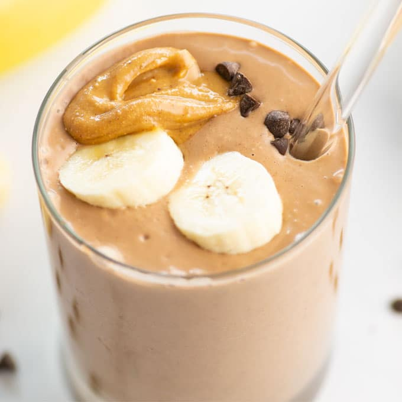

Peanut Butter Smoothie Recipe

A delicious and healthy three ingredient peanut butter smoothie that will boost your energy!
Thick, creamy, and naturally sweet, this easy banana smoothie reminds me of a milkshake, it’s that yummy.
This is a great smoothie recipe for beginners thanks to its appealing taste and short ingredient list. Just add to a blender, it doesn’t get much easier than that.
Ingredients
- Natural Peanut Butter
- Almond Milk
- Bananas
Steps
- First, add one cup of almond milk to the blender
- Then add 2 TBSP of all natural peanut butter (no added sugar)
- Last, break apart 1 Banana into pieces and add to the blender
- Blend together and add ingredients to adjust for consistency and taste
- Serve chilled or with ice and enjoy!